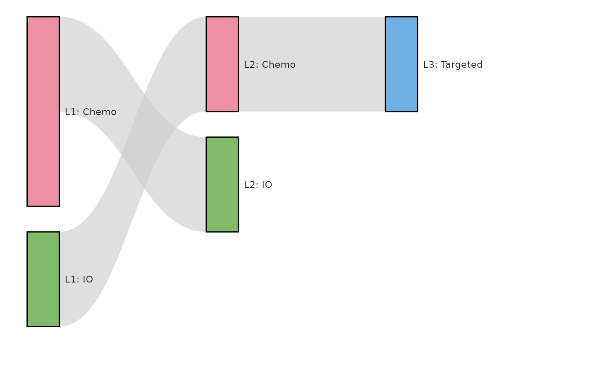
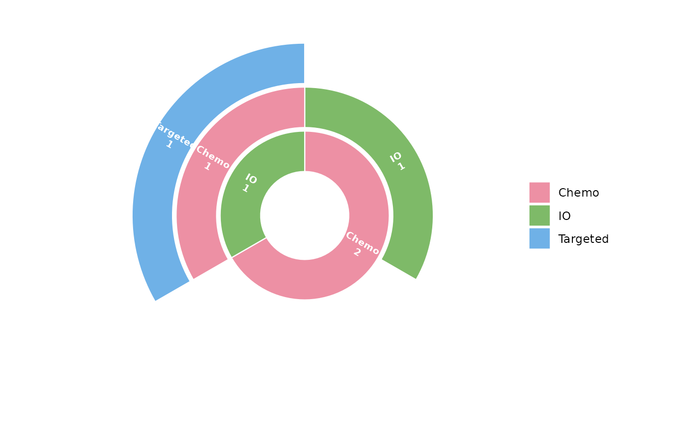

Turn one-row-per-subject-per-line data (e.g. lines of therapy) into the
inputs of tfl_plot_sankey() and tfl_plot_sunburst().
Usage
tfl_sankey_data(
data,
id = "USUBJID",
stage = "LINE",
category = "TRT",
by = NULL,
levels = NULL,
stage_prefix = "L"
)
tfl_sunburst_data(
data,
id = "USUBJID",
stage = "LINE",
category = "TRT",
levels = NULL,
stage_prefix = "L"
)Arguments
- data
Data frame with one row per subject and stage (line).
- id
Subject variable.
- stage
Stage variable (e.g. line number); stages are ordered by their values (numeric order when numeric).
- category
Category drawn as nodes / arcs (e.g. treatment class).
- by
Optional subgroup variable: nodes and links are built for all subjects (
"ALL") and for each value ofby, marked in columngrp.- levels
Optional order of the categories (default: order of first appearance, stage by stage).
- stage_prefix
Prefix of the node labels (
"L"gives"L1: Chemo").
Value
tfl_sankey_data(): a list with nodes (id, stage, category,
label, n, and grp when by is given) and links (source,
target, value, grp). tfl_sunburst_data(): a data frame with one
column per stage (L1, L2, ...) and the subject count n.
Examples
lot <- data.frame(
USUBJID = c("1", "1", "2", "3", "3", "3"),
LINE = c(1, 2, 1, 1, 2, 3),
TRT = c("Chemo", "IO", "Chemo", "IO", "Chemo", "Targeted")
)
sk <- tfl_sankey_data(lot, stage = "LINE", category = "TRT")
tfl_plot_sankey(sk$nodes, sk$links, node_label = "label", node_value = "n",
node_treatment = "category")

tfl_plot_sunburst(tfl_sunburst_data(lot, stage = "LINE", category = "TRT"))
